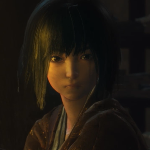

|  | Юный Господин является единственным уцелевшим потомком древнего клана. В качестве приёмного сына был взят на воспитание господином Хирата. Его растили в уединении, что бы сделать из него будущего синоби. Не смотря на свой возраст, принц достаточно мудр, спокоен и уверен в себе. В начале игры, из-за своей уникальной родословной принц был похищен военачальником клана Асина, вскоре после смерти протагониста, которому было поручено защищать принца ценой собственной жизни. |
|---|---|
| Юный Господин | 2017/05/13 10:30:59 |